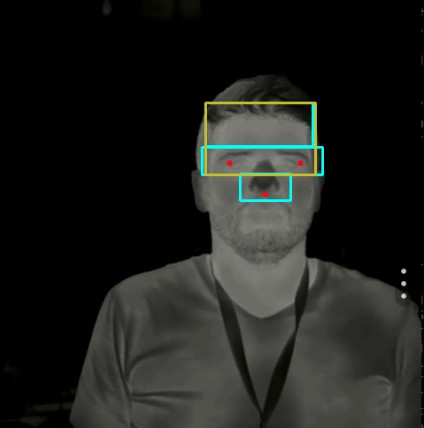

Notícias
Confira dados oficiais do Covid19 no Brasil
Startups brasileiras desenvolvem sistema que detecta febre a distância
 Sistema de visão computacional permite medir febre a distância (Foto: Hoobox/Divulgação)
Sobre Mim
Sou formado em Sistemas de Informação e em Pedagogia. Estudando atualmente muito NodeJS, ReactJS, React Native, CSS.
Informações mais detalhadas sobre mim, só conferir minhas redes sociais abaixo: